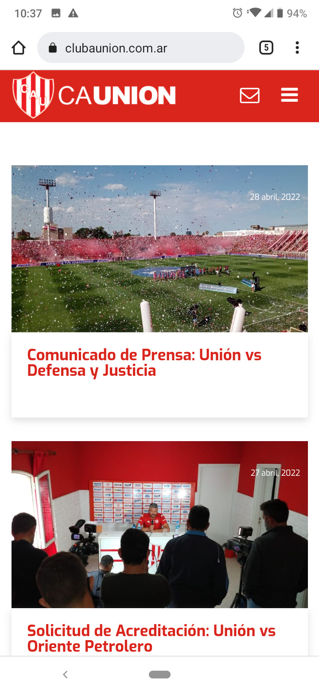

Repetition
The Church of Jesus Christ of Later-Day Saints
The website of the Church of Jesus Christ of Later-Day Saints uses the principle of repetition given that there is a similar structure in each of the resources. It uses the same font and the same backround colors. The topics are also related, we can see 3 different images of Jesus Christ.
White Space
Club Atlético Union
The website of the Union club follows the principle of white space and clean design since its images and paragraphs have appropiate padding. There is a distance between each other. This is found in all of the subpages, despite the screenshot was taken in the main page.
Contrast
National Geographic
The website of National Geographic reflects clearly the principle of contrast. Althought it may seem a a bit dark, it uses few colors but attractive colors. Many film and television websites are dark environments, since the mind associates it with the darkness of the cinema.